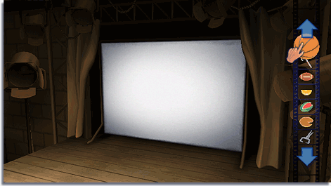
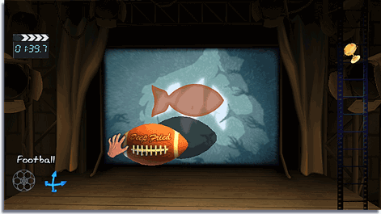

Obtén medallas de bronce, plata u oro dependiendo del éxito que tengas cubriendo la figura con sombras sin salirte del contorno. Al completar acertijos aparecerán más para resolver, así como más objetos que podrás utilizar en el modo Free Play (Juego libre).
Todos los objetos que se pueden utilizar para crear sombras se guardan en el Film Reel (Rollo de película). Puedes utilizar algunos de ellos o todos: lo importante es cubrir el objetivo con sombras.
Apunta con el Wii Remote al objeto que desees y oprime  para seleccionarlo. El objeto estará disponible para que experimentes con él en el escenario.
para seleccionarlo. El objeto estará disponible para que experimentes con él en el escenario.

Para mover el objeto, apunta al mismo con el Wii Remote, mantén oprimido y luego mueve el Wii Remote.

Para hacer rotar un objeto, selecciónalo y utiliza la palanca de control para girar la esfera.
Tras seleccionar el objeto, mantén oprimido . Mueve la palanca de control hacia adelante o hacia atrás para acercar o alejar el objeto de la luz. Verás la sombra crecer y encoger en el lienzo.
 Para girar el objeto, selecciónalo, mantén oprimido y utiliza la palanca de control para girarlo en cualquier dirección.
Para girar el objeto, selecciónalo, mantén oprimido y utiliza la palanca de control para girarlo en cualquier dirección.
 El indicador te mostrará qué modo tienes activado.
El indicador te mostrará qué modo tienes activado.
Con Wii MotionPlus, puedes controlar el objeto seleccionado girando el Wii Remote u oprimiendo arriba o abajo en

para acercar o alejar el objeto de la luz.
Puedes bloquear un objeto y dejarlo quieto en su lugar. Cuando hayas seleccionado el objeto, oprime

para bloquearlo; vuelve a oprimir
para desbloquearlo.
Para deshacer tu última acción, oprime .
Para devolver un objeto a Film Reel (Rollo de película), selecciona el objeto y oprime

. Esta es una opción útil para restablecer un objeto.